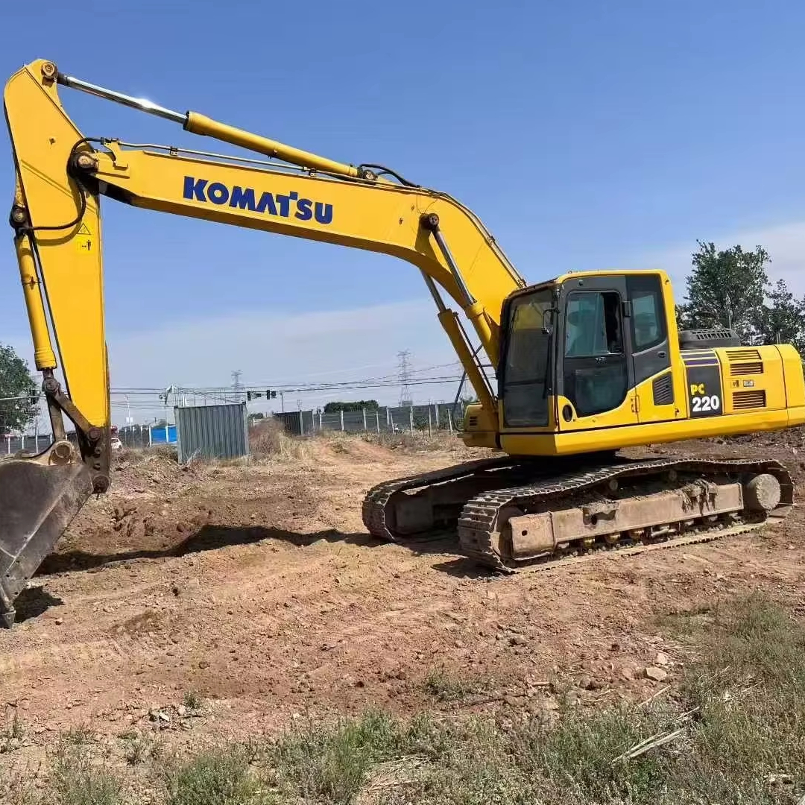

Refurbished Komatsu PC220 Excavator
The Komatsu PC220 is a mid-size hydraulic excavator known for its robust design, versatile functionality, and reliable performance. Designed for demanding construction, earthmoving, and utility tasks, the PC220 provides the perfect balance of power, efficiency, and operator comfort. Choosing a refurbished Komatsu PC220 allows businesses to access top-tier machinery at a significantly reduced cost while maintaining high productivity standards.
Honestly, it's almost impossible to buy a brand new excavator from China. They either don't exist or are made in China. If a Chinese seller tells you their Caterpillar/Komatsu/Volvo/Kobelco/Hitachi is brand new, they're lying. Therefore, a refurbished excavator is your best bet.

Here are the detailed specifications for a refurbished Komatsu PC220LC-8 excavator:
Operating Weight and Dimensions
- Operating Weight: 21,800–22,500 kg
- Overall Length: ~10.1–10.4 meters
- Overall Width: ~3.0–3.2 meters
- Overall Height: ~3.2 meters
- Tail Swing Radius: ~3.1–3.3 meters
- Ground Clearance: ~470–500 mm
- Track Width: 600–700 mm standard
Engine and Powertrain
- Engine Model: Komatsu SAA6D102E-2 (Tier 2 compliant)
- Rated Power Output: ~168–172 hp (125–128 kW) @ 2,000 rpm
- Maximum Torque: ~750–800 Nm
- Fuel Tank Capacity: ~400 liters
- Travel Speed: 3.4–5.5 km/h
- Swing Speed: ~10 rpm
- Gradeability: Up to 70% (35°)
Hydraulic System
- Main Pump Type: Closed Center Load Sensing (CLSS) axial piston pumps
- Flow Rate: ~2 × 220–240 L/min
- System Pressure: Up to 34.3 MPa
- Hydraulic Oil Capacity: ~240–260 liters
- Boom Cylinder Bore: ~130 mm
- Arm Cylinder Bore: ~115 mm
- Bucket Cylinder Bore: ~105 mm
Performance Metrics
- Bucket Capacity: 1.0–1.2 m³ (SAE heaped)
- Max Digging Depth: ~6.7–7.0 meters
- Max Reach (Horizontal): ~10.2–10.4 meters
- Max Dump Height: ~6.8–7.0 meters
- Bucket Digging Force: ~155–165 kN
- Arm Digging Force: ~115–125 kN
Cab and Operator Features
- Cab Type: ROPS/FOPS certified
- Display: LCD monitor with diagnostics and fuel tracking
- Controls: Electro-hydraulic joysticks with customizable sensitivity
- Comfort: Air suspension seat, climate control, low vibration cab
- Visibility: Rear-view camera, LED work lights, wide glass area
Smart Features and Efficiency
- Fuel Efficiency: Electronic engine control + auto idle shutdown
- Emissions Control: Tier 2 compliant (no DPF or SCR)
- Telematics Ready: KOMTRAX system for remote diagnostics and fleet tracking
- Attachment Memory: Preset hydraulic settings for multiple tools
Attachments Compatibility
- Standard Bucket: 1.0–1.2 m³
- Optional Tools: Hydraulic breaker, demolition shear, compactor, ripper
- Quick Coupler: Hydraulic or manual options available
Refurbishment Scope
Refurbished PC220 units typically include:
- Engine Overhaul: Turbocharger, injectors, seals, cooling system
- Hydraulic Restoration: Pump recalibration, valve block testing, hose replacement
- Electrical Diagnostics: Monitor, sensors, wiring harness
- Cab Reconditioning: Seat, joysticks, HVAC, repainting
- Structural Repairs: Boom/bucket welding, bushing replacement, undercarriage rebuild
Overview of the Komatsu PC220 Excavator
The Komatsu PC220 belongs to Komatsu’s PC series, which has a long history of dependable, heavy-duty excavators worldwide. With an operating weight typically around 22 tons, the PC220 is ideal for tasks such as trenching, material handling, and site preparation. Its proven hydraulic system and durable structure make it a trusted choice for contractors, miners, and rental fleets.
Key Specifications
-
Operating Weight: 22,000–23,000 kg (48,500–50,700 lbs)
-
Engine Power: 127–130 kW (170–175 hp)
-
Max Digging Depth: 6.6–6.7 meters (21.6–22 feet)
-
Max Reach: 9.7–9.9 meters (31.8–32.5 feet)
-
Bucket Capacity: 1.2–1.4 cubic meters
-
Travel Speed: 5.5 km/h (3.4 mph)
The PC220 balances performance and efficiency, making it capable of handling tough workloads without excessive fuel consumption.
Engine and Hydraulic Performance
The PC220 is equipped with a fuel-efficient, high-torque engine designed for demanding operations. Its hydraulic system ensures smooth and precise movements, optimizing cycle times and productivity.
-
Fuel Efficiency: Load-sensing hydraulics reduce fuel usage by adjusting output to match operational demands.
-
Powerful Digging: The hydraulic system delivers consistent digging force, even in dense soils or tough working conditions.
-
Reliable Cooling System: The engine cooling system is engineered to withstand long operating hours under high loads, reducing the risk of overheating.
Undercarriage and Durability
Komatsu’s undercarriage design is a key strength of the PC220, providing stability and long service life.
-
Heavy-Duty Tracks: Tracks and rollers are reinforced for high durability in rough terrain.
-
Extended Component Life: Regular inspection and refurbishment ensure that refurbished models maintain their structural integrity.
-
Reduced Maintenance Costs: High-quality refurbishment reduces the frequency of component replacements, keeping operational costs low.
Operator Comfort and Safety
Operator efficiency is enhanced by the PC220’s well-designed cabin and control layout.
-
Spacious Cabin: The cab provides excellent visibility and ergonomic seating to reduce fatigue during long shifts.
-
Safety Features: Equipped with ROPS/FOPS protection, safety alarms, and easy-access controls to ensure safe operation in all conditions.
-
Intuitive Controls: User-friendly joysticks and display panels make operation simple and precise, even for less experienced operators.
Benefits of Choosing a Refurbished Komatsu PC220
Opting for a refurbished PC220 combines reliability with cost savings. Refurbished units undergo thorough inspection and restoration, making them nearly equivalent to new machines in performance.
-
Lower Purchase Cost: Refurbished units can cost up to 40%–50% less than new models.
-
Engine and Hydraulic Overhaul: Critical systems are restored or replaced, ensuring reliable long-term operation.
-
Extended Warranty Options: Many refurbished units include warranties, offering additional peace of mind.
-
Environmental Advantage: Buying refurbished reduces waste and extends the life of existing machinery.
Maintenance Tips for Longevity
To maximize the lifespan and performance of a PC220, regular maintenance is essential.
-
Engine and Hydraulic Care: Replace oils and filters at recommended intervals to avoid damage and maintain efficiency.
-
Track and Undercarriage Inspection: Monitor track tension and condition regularly to prevent wear and downtime.
-
Cab and Controls: Keep the operator’s cabin clean and check controls and safety systems frequently for optimal functionality.
-
Scheduled Servicing: Follow Komatsu’s maintenance schedule to preserve performance and reduce unexpected repair costs.
Conclusion
The Komatsu PC220 Excavator remains a reliable and versatile choice for heavy-duty construction and excavation work. A refurbished PC220 delivers similar power, efficiency, and durability as a new unit but at a significantly lower investment. With proper maintenance and care, a refurbished PC220 can serve contractors, rental fleets, and construction companies effectively for years. It combines proven Komatsu engineering with cost efficiency, making it an excellent long-term investment for businesses seeking reliability and performance without compromising budget.
Our Commitment
- 2 years / 4000 hours warranty.
- EPA certified.
- No sweatshop labor.
Contacts

- [email protected]
- Youtube Instagram Facebook
- Navigation: G206 (Sishu Bridge) in Changfeng County, Hefei City, Anhui Province, 200 meters north to the east